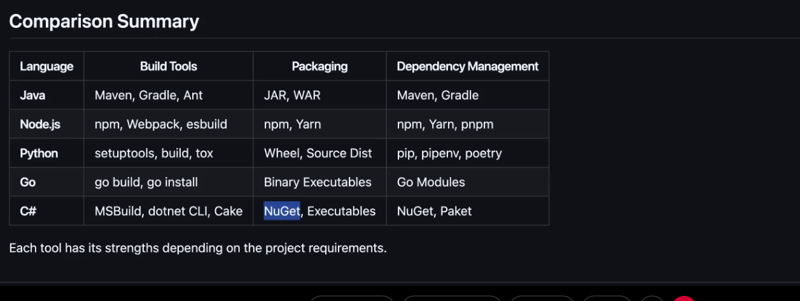
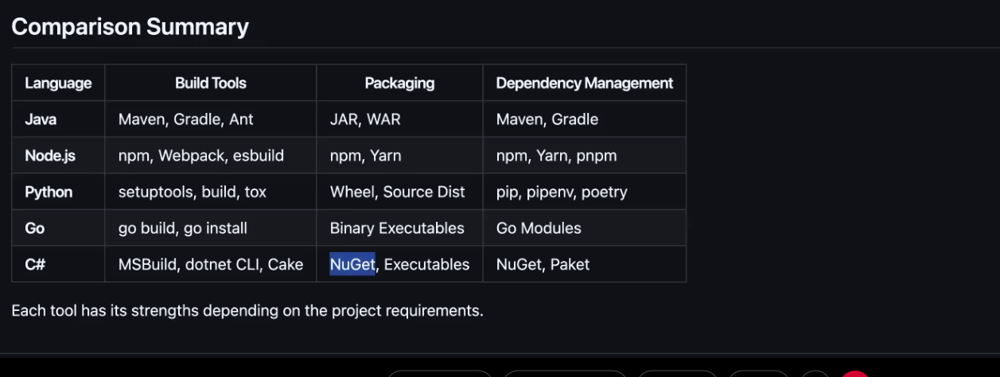

install server and steps from Puneet notes
1. created a EC2 server on aws with some configuration
2. install required softwares - use java commands from notes
3. install maven --> during compilation maven will read pom.xml -> go through all dependencies and download to local
when we do mvn clean - whole target folder will be deleted
1. when we do install there was maven repository which will get create (.m2) it acts like local repo
2. when you copile and package ur sourcode there was .war or .jar file will get created (as per laguage) this will sit under target folder - u can chec
3. by default jenkins run on port 8080
4.on ur instance we need to allow in security group then only it will allow trafic on jenkins
5. we can do lot of things with jenkins from the plugins --> when install jenkins select with default that itself has lot of options...
install and configure plugins

 3. Different build tools in market- they have certain stards we should follow while creating build process

3. Different build tools in market- they have certain stards we should follow while creating build process
